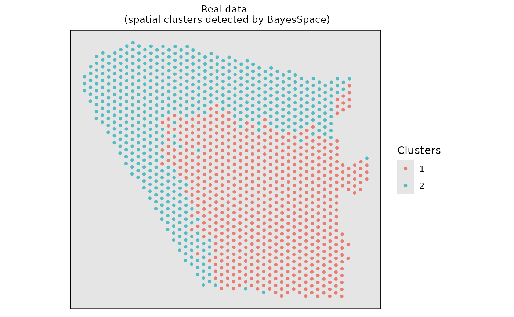
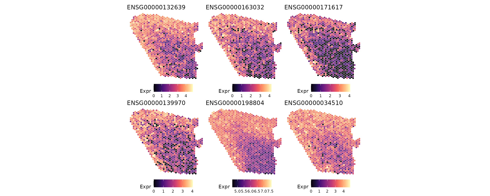

Perform ClusterDE on a two-domain spatial dataset
Siqi Chen
Computer Science, Central South Universitysiqichen4477@gmail.com
Dongyuan Song
Department of Genetics & Genome Sciences, UConn HealthBioinformatics IDP, University of California, Los Angelesdongyuansong@ucla.edu
19 August 2026
Source:vignettes/ClusterDE-twodomains.Rmd
ClusterDE-twodomains.RmdDownload data
We selected adjacent layer 6 and WM of 151673 slice from the LIBD Human Dorsolateral Prefrontal Cortex (DLPFC) dataset, which is downloaded in the spatialLIBD R package. We removed the genes expressed in fewer than 20% spots to save computational time here.
# # Download the spot-level data
# spe <- spatialLIBD::fetch_data(type = "spe")
#
# # Select the Layer6 and WM domains in the slice "151673"
# sub_151673 <- spe[, spe$sample_id == "151673"]
# index <- sub_151673$spatialLIBD == "L6" | sub_151673$spatialLIBD == "WM"
# index[which(is.na(index))] <- "NAN"
# sub_151673 <- sub_151673[, index == "TRUE"]
# print(sub_151673)
#
# # Delete the genes that express rate less than 20%
# data <- sub_151673@assays@data$counts
# zero_expre_rate <- apply(data, 1, function(x) {
# zero_true <- x == 0
# zero_num <- length(which(zero_true == TRUE)) / dim(data)[2]
# return(zero_num)
# })
# zero_expre_gene_idx <- which(zero_expre_rate < 0.8)
# sub_151673 <- sub_151673[zero_expre_gene_idx,]
# cat(paste0("The size of data: ", dim(sub_151673)[1], "*", dim(sub_151673)[2], sep = ""))
#
# # Construct the SingleCellExperiment object
# dlpfc_twodomain <- SingleCellExperiment::SingleCellExperiment(list(counts = sub_151673@assays@data$counts))
# # Add colData information of singlecellexperiment
# dlpfc_twodomain$spatial1 <- sub_151673@int_colData@listData$spatialCoords[, 2]
# dlpfc_twodomain$spatial2 <- sub_151673@int_colData@listData$spatialCoords[, 1]
# dlpfc_twodomain$cell_type <- sub_151673@colData$spatialLIBD
# SingleCellExperiment::logcounts(dlpfc_twodomain) <- log1p(SingleCellExperiment::counts(dlpfc_twodomain))
# dlpfc_twodomain <- Seurat::as.Seurat(dlpfc_twodomain)
data(dlpfc_twodomain, package = "ClusterDE")Visualize the real data with two domains (L6 and WM).
# Visualize the real spatial domains
domains <- data.frame(Xaxis = dlpfc_twodomain$spatial1, Yaxis = dlpfc_twodomain$spatial2, Domains = dlpfc_twodomain$cell_type)
#> Loading required package: SeuratObject
#> Loading required package: sp
#>
#> Attaching package: 'SeuratObject'
#> The following objects are masked from 'package:base':
#>
#> intersect, t
ggplot2::ggplot(domains, ggplot2::aes(x = Xaxis, y = Yaxis, col = Domains)) +
ggplot2::geom_point(size = 1.0) +
ggplot2::coord_equal() +
ggplot2::ggtitle("Manual annotation \n (The layer6 and WM in the slice 151673)") +
ggplot2::theme(
plot.title = ggplot2::element_text(size = 10, hjust = 0.5),
panel.grid = ggplot2::element_blank(),
panel.background = ggplot2::element_rect(fill = "gray90"),
panel.border = ggplot2::element_rect(color = "black", fill = NA, linewidth = 0.6),
axis.title.x = ggplot2::element_blank(),
axis.title.y = ggplot2::element_blank(),
axis.ticks.x = ggplot2::element_blank(),
axis.ticks.y = ggplot2::element_blank(),
axis.text.x = ggplot2::element_blank(),
axis.text.y = ggplot2::element_blank()
) +
ggplot2::scale_color_manual(values = c("#5791cc", "#403f92"))
Run the BayesSpace + Seurat pipeline
Firstly, we employed the BayesSpace for spatial clustering. Please note that ClusterDE is designed for 1 vs 1 comparison; therefore, we obtain two spatial clusters for illustration purpose.
# Construct the input of BayesSpace based on real dataset
# The input of BayesSpace is sce object
dlpfc_cluster <- SingleCellExperiment::SingleCellExperiment(
list(counts = Seurat::GetAssayData(dlpfc_twodomain, layer = "counts"))
)
# Add colData information of singlecellexperiment
dlpfc_cluster$row <- dlpfc_twodomain$spatial1
dlpfc_cluster$col <- dlpfc_twodomain$spatial2
# Log-normalize the count data
set.seed(123)
dlpfc_cluster <- BayesSpace::spatialPreprocess(dlpfc_cluster, platform = "ST", n.PCs = 7, log.normalize = T)
# Clustering with BayesSpace
dlpfc_cluster <- BayesSpace::spatialCluster(
dlpfc_cluster,
q = 2,
platform = "ST",
d = 7,
init.method = "mclust",
model = "t",
gamma = 2,
nrep = 1000,
burn.in = 100,
save.chain = T
)
#> Neighbors were identified for 0 out of 1205 spots.
#> Fitting model...
#> You created a large dataset with compression and chunking.
#> The chunk size is equal to the dataset dimensions.
#> If you want to read subsets of the dataset, you should testsmaller chunk sizes to improve read times.
#> You created a large dataset with compression and chunking.
#> The chunk size is equal to the dataset dimensions.
#> If you want to read subsets of the dataset, you should testsmaller chunk sizes to improve read times.
#> Calculating labels using iterations 100 through 1000.Visualize the spatial clustering results based on the real data.
# Visualize the spatial cluster
clusters <- data.frame(Xaxis = dlpfc_cluster$row, Yaxis = dlpfc_cluster$col, Clusters = as.character(dlpfc_cluster$spatial.cluster))
ggplot2::ggplot(clusters, ggplot2::aes(x = Xaxis, y = Yaxis, col = Clusters)) +
ggplot2::geom_point(size = 1.0) +
ggplot2::coord_equal() +
ggplot2::ggtitle("Real data \n (spatial clusters detected by BayesSpace)") +
ggplot2::theme(
plot.title = ggplot2::element_text(size = 10, hjust = 0.5),
panel.grid = ggplot2::element_blank(),
panel.background = ggplot2::element_rect(fill = "gray90"),
panel.border = ggplot2::element_rect(color = "black", fill = NA, size = 0.6),
axis.title.x = ggplot2::element_blank(),
axis.title.y = ggplot2::element_blank(),
axis.ticks.x = ggplot2::element_blank(),
axis.ticks.y = ggplot2::element_blank(),
axis.text.x = ggplot2::element_blank(),
axis.text.y = ggplot2::element_blank()
) +
ggplot2::scale_color_manual(values = c("#e87d72", "#54bcc2"))
#> Warning: The `size` argument of `element_rect()` is deprecated as of ggplot2 3.4.0.
#> ℹ Please use the `linewidth` argument instead.
#> This warning is displayed once every 8 hours.
#> Call `lifecycle::last_lifecycle_warnings()` to see where this warning was
#> generated.Then, we used the common DE method (Wilcoxon Rank Sum Test) to identify domain marker genes between the two spatial clusters.
# Identify domain marker genes in the real dataset based on the BayesSpace clustering result, follow Seurat tutorial
dlpfc_twodomain <- Seurat::as.Seurat(dlpfc_cluster)
#> Warning: Keys should be one or more alphanumeric characters followed by an
#> underscore, setting key from PC to PC_
Seurat::Idents(dlpfc_twodomain) <- "spatial.cluster"
original_markers <- Seurat::FindMarkers(
object = dlpfc_twodomain,
ident.1 = 2,
ident.2 = 1,
test.use = "wilcox",
logfc.threshold = 0,
min.pct = 0,
min.cells.feature = 1,
min.cells.group = 1
)
original_markers <- original_markers[original_markers$avg_log2FC > 0,]
head(original_markers)
#> p_val avg_log2FC pct.1 pct.2 p_val_adj
#> ENSG00000198804 6.479948e-127 0.9043609 1.000 1.000 1.815033e-123
#> ENSG00000132639 1.894004e-122 1.6959888 0.991 0.926 5.305106e-119
#> ENSG00000198938 1.063328e-108 0.7275062 1.000 1.000 2.978381e-105
#> ENSG00000154146 3.835596e-99 1.4389400 0.978 0.926 1.074350e-95
#> ENSG00000163032 6.974259e-99 1.6499892 0.966 0.821 1.953490e-95
#> ENSG00000187094 6.429586e-96 1.7939567 0.949 0.779 1.800927e-92Find DEGs using ClusterDE
We can use findMarkers() from ClusterDE with spatial specified as name of X and Y coordinates in the data meta columns. Here in the example, coordinates are stored in row and col.
res <- ClusterDE::findMarkers(dlpfc_twodomain, ident.1 = 2, ident.2 = 1, spatial = c("row", "col"))
#> 100% of genes are used in correlation modelling.
#> 0/1: Neighbors were identified for 0 out of 1205 spots.
#> 0/1: Fitting model...
#> 0/1: You created a large dataset with compression and chunking.
#> The chunk size is equal to the dataset dimensions.
#> If you want to read subsets of the dataset, you should testsmaller chunk sizes to improve read times.
#> 0/1: You created a large dataset with compression and chunking.
#> The chunk size is equal to the dataset dimensions.
#> If you want to read subsets of the dataset, you should testsmaller chunk sizes to improve read times.
#> 0/1: Calculating labels using iterations 100 through 1000.
#> 0/1: Normalizing layer: counts
head(res)
#> # A tibble: 6 × 3
#> gene cs record
#> <chr> <dbl> <dbl>
#> 1 ENSG00000132639 58.5 1
#> 2 ENSG00000163032 49.0 1
#> 3 ENSG00000171617 48.8 1
#> 4 ENSG00000139970 40.9 1
#> 5 ENSG00000198804 40.7 1
#> 6 ENSG00000034510 39.7 1Visualize top marker genes
We visualize the top DE genes from ClusterDE. As expected, the top genes detected by ClusterDE exhibit clear spatial expression patterns.
top_genes_clusterde <- res$gene[1:6]
expr <- Seurat::GetAssayData(dlpfc_twodomain, layer = "data")[top_genes_clusterde, , drop = F]
x_coord <- dlpfc_twodomain@meta.data$row
y_coord <- dlpfc_twodomain@meta.data$col
plots <- lapply(top_genes_clusterde, function(gene) {
df <- data.frame(
X = x_coord,
Y = y_coord,
Expr = as.numeric(expr[gene,])
)
ggplot2::ggplot(df, ggplot2::aes(x = X, y = Y, color = Expr)) +
ggplot2::geom_point(size = 1) +
ggplot2::scale_colour_gradientn(colors = viridis::viridis_pal(option = "magma")(10)) +
ggplot2::coord_fixed() +
ggplot2::ggtitle(gene) +
ggplot2::theme_void() +
ggplot2::theme(legend.position = "bottom")
})
patchwork::wrap_plots(plots, nrow = 2)
Session information
sessionInfo()
#> R version 4.4.0 (2024-04-24)
#> Platform: x86_64-pc-linux-gnu
#> Running under: Ubuntu 18.04.6 LTS
#>
#> Matrix products: default
#> BLAS/LAPACK: FlexiBLAS OPENBLAS; LAPACK version 3.11.0
#>
#> locale:
#> [1] LC_CTYPE=en_US.UTF-8 LC_NUMERIC=C
#> [3] LC_TIME=en_US.UTF-8 LC_COLLATE=en_US.UTF-8
#> [5] LC_MONETARY=en_US.UTF-8 LC_MESSAGES=en_US.UTF-8
#> [7] LC_PAPER=en_US.UTF-8 LC_NAME=C
#> [9] LC_ADDRESS=C LC_TELEPHONE=C
#> [11] LC_MEASUREMENT=en_US.UTF-8 LC_IDENTIFICATION=C
#>
#> time zone: America/Los_Angeles
#> tzcode source: system (glibc)
#>
#> attached base packages:
#> [1] stats graphics grDevices utils datasets methods base
#>
#> other attached packages:
#> [1] SeuratObject_5.0.2 sp_2.1-4 BiocStyle_2.32.0
#>
#> loaded via a namespace (and not attached):
#> [1] fs_1.6.4 matrixStats_1.3.0
#> [3] spatstat.sparse_3.0-3 bitops_1.0-7
#> [5] httr_1.4.7 RColorBrewer_1.1-3
#> [7] backports_1.4.1 tools_4.4.0
#> [9] sctransform_0.4.1 utf8_1.2.4
#> [11] R6_2.5.1 DirichletReg_0.7-2
#> [13] lazyeval_0.2.2 uwot_0.2.2
#> [15] rhdf5filters_1.16.0 withr_3.0.0
#> [17] ClusterDE_0.99.4 gridExtra_2.3
#> [19] progressr_0.14.0 cli_3.6.2
#> [21] Biobase_2.64.0 textshaping_0.3.7
#> [23] spatstat.explore_3.2-7 fastDummies_1.7.3
#> [25] sandwich_3.1-0 labeling_0.4.3
#> [27] sass_0.4.9 Seurat_5.1.0
#> [29] spatstat.data_3.0-4 ggridges_0.5.6
#> [31] pbapply_1.7-2 pkgdown_2.0.9
#> [33] systemfonts_1.1.0 scater_1.32.0
#> [35] parallelly_1.37.1 limma_3.60.6
#> [37] RSQLite_2.3.6 generics_0.1.3
#> [39] ica_1.0-3 spatstat.random_3.2-3
#> [41] dplyr_1.1.4 Matrix_1.7-0
#> [43] ggbeeswarm_0.7.2 fansi_1.0.6
#> [45] S4Vectors_0.42.0 abind_1.4-5
#> [47] lifecycle_1.0.4 yaml_2.3.12
#> [49] edgeR_4.2.0 SummarizedExperiment_1.34.0
#> [51] rhdf5_2.48.0 SparseArray_1.4.3
#> [53] BiocFileCache_2.12.0 Rtsne_0.17
#> [55] grid_4.4.0 blob_1.2.4
#> [57] promises_1.3.0 dqrng_0.4.0
#> [59] crayon_1.5.2 miniUI_0.1.1.1
#> [61] lattice_0.22-6 beachmat_2.20.0
#> [63] cowplot_1.1.3 kde1d_1.1.1
#> [65] metapod_1.12.0 pillar_1.9.0
#> [67] knitr_1.51 GenomicRanges_1.56.0
#> [69] randtoolbox_2.0.5 xgboost_3.2.1.1
#> [71] future.apply_1.11.2 codetools_0.2-20
#> [73] leiden_0.4.3.1 glue_1.7.0
#> [75] data.table_1.15.4 vctrs_0.6.5
#> [77] png_0.1-8 spam_2.10-0
#> [79] gtable_0.3.5 assertthat_0.2.1
#> [81] cachem_1.0.8 xfun_0.56
#> [83] S4Arrays_1.4.0 mime_0.12
#> [85] coop_0.6-3 rngWELL_0.10-10
#> [87] coda_0.19-4.1 survival_3.6-4
#> [89] SingleCellExperiment_1.26.0 maxLik_1.5-2.2
#> [91] statmod_1.5.0 bluster_1.14.0
#> [93] BayesSpace_1.14.0 fitdistrplus_1.2-1
#> [95] ROCR_1.0-11 bettermc_1.2.2.9000
#> [97] nlme_3.1-164 bit64_4.0.5
#> [99] filelock_1.0.3 RcppAnnoy_0.0.22
#> [101] GenomeInfoDb_1.40.0 bslib_0.7.0
#> [103] irlba_2.3.5.1 vipor_0.4.7
#> [105] KernSmooth_2.23-22 colorspace_2.1-0
#> [107] BiocGenerics_0.50.0 DBI_1.2.2
#> [109] tidyselect_1.2.1 bit_4.0.5
#> [111] compiler_4.4.0 curl_5.2.1
#> [113] BiocNeighbors_1.22.0 desc_1.4.3
#> [115] DelayedArray_0.30.1 plotly_4.10.4
#> [117] bookdown_0.39 checkmate_2.3.1
#> [119] scales_1.3.0 lmtest_0.9-40
#> [121] mvnfast_0.2.8 rvinecopulib_0.7.3.1.0
#> [123] stringr_1.5.1 digest_0.6.35
#> [125] goftest_1.2-3 presto_1.0.0
#> [127] spatstat.utils_3.0-4 rmarkdown_2.30
#> [129] XVector_0.44.0 htmltools_0.5.8.1
#> [131] pkgconfig_2.0.3 sparseMatrixStats_1.16.0
#> [133] MatrixGenerics_1.16.0 dbplyr_2.5.0
#> [135] fastmap_1.2.0 rlang_1.1.3
#> [137] htmlwidgets_1.6.4 UCSC.utils_1.0.0
#> [139] shiny_1.8.1.1 DelayedMatrixStats_1.26.0
#> [141] farver_2.1.2 jquerylib_0.1.4
#> [143] zoo_1.8-12 jsonlite_1.8.8
#> [145] BiocParallel_1.38.0 mclust_6.1.1
#> [147] BiocSingular_1.20.0 RCurl_1.98-1.14
#> [149] magrittr_2.0.3 Formula_1.2-5
#> [151] scuttle_1.14.0 GenomeInfoDbData_1.2.12
#> [153] dotCall64_1.1-1 patchwork_1.2.0
#> [155] Rhdf5lib_1.26.0 munsell_0.5.1
#> [157] Rcpp_1.0.12 viridis_0.6.5
#> [159] reticulate_1.46.0 stringi_1.8.4
#> [161] zlibbioc_1.50.0 MASS_7.3-60.2
#> [163] gamlss.dist_6.1-1 plyr_1.8.9
#> [165] parallel_4.4.0 listenv_0.9.1
#> [167] ggrepel_0.9.5 deldir_2.0-4
#> [169] splines_4.4.0 tensor_1.5
#> [171] locfit_1.5-9.9 igraph_2.0.3
#> [173] spatstat.geom_3.2-9 RcppHNSW_0.6.0
#> [175] reshape2_1.4.4 stats4_4.4.0
#> [177] ScaledMatrix_1.12.0 evaluate_0.23
#> [179] scran_1.32.0 BiocManager_1.30.27
#> [181] httpuv_1.6.15 miscTools_0.6-30
#> [183] RANN_2.6.1 tidyr_1.3.1
#> [185] purrr_1.0.2 polyclip_1.10-6
#> [187] future_1.33.2 scattermore_1.2
#> [189] ggplot2_3.5.1 rsvd_1.0.5
#> [191] xtable_1.8-4 RSpectra_0.16-1
#> [193] later_1.3.2 viridisLite_0.4.2
#> [195] ragg_1.3.1 tibble_3.2.1
#> [197] memoise_2.0.1 beeswarm_0.4.0
#> [199] IRanges_2.38.0 cluster_2.1.6
#> [201] globals_0.16.3